DogmomAI is here!
Abstract
DogmomAI is a pet-project serving as an outlet for myself to create a fictitious, well-endowed character at my liking through AI image generation. Though WIP, below is DogmomAI herself.
Concept
Imagine this: A goth girlfriend turned demonic wifey with impressive breasts and a gut to match with a businesswhore aesthetic who's slightly snarky but still gentle and understands you and is able to help you when you're down. The company she works at? I dunno, one of the evil ones.
She's also just extremely big. Not just breasts or anything, she's also just over seven foot, sporting gigantic thighs, a titanic belly, and just an overall wide frame. Something about becoming a demon she said.
Generations
(CFG=4) plump, busty, purple hair, red eyes, black clothes, black horns, cleavage, suit
 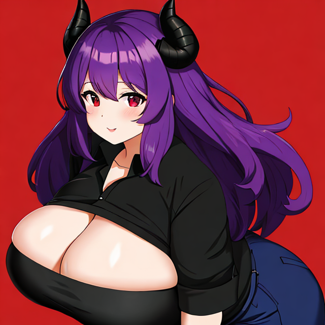
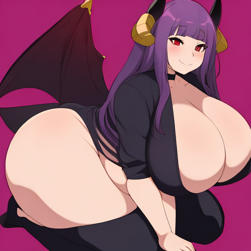
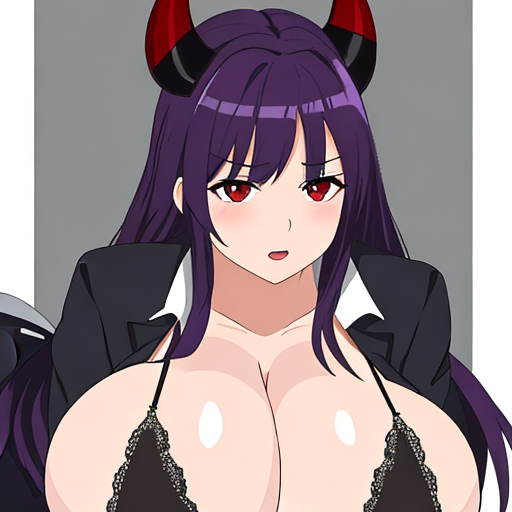
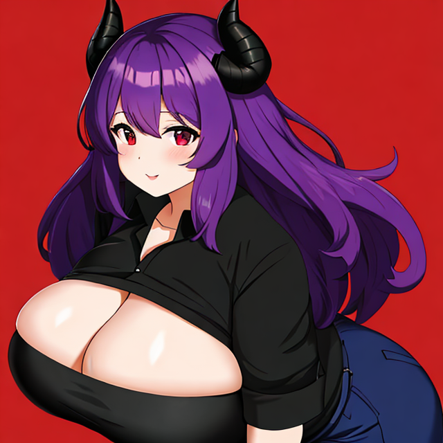
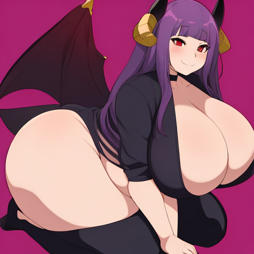
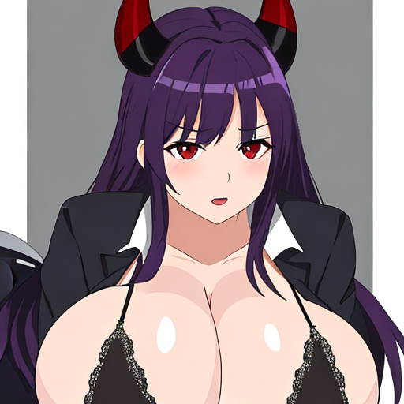
 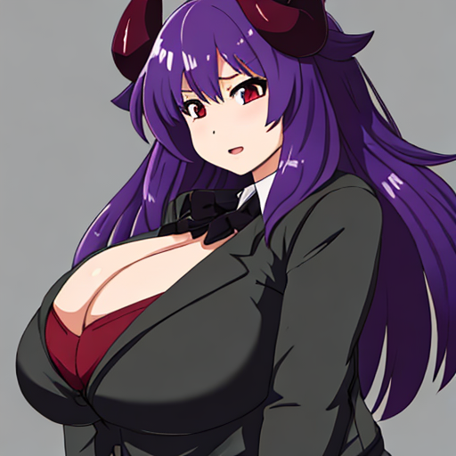
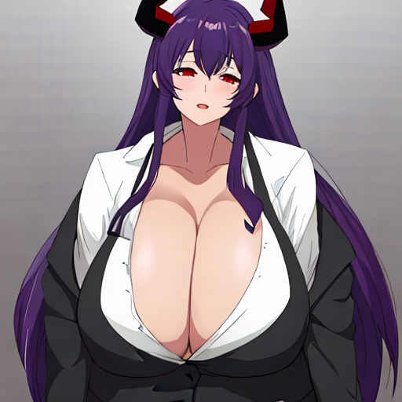
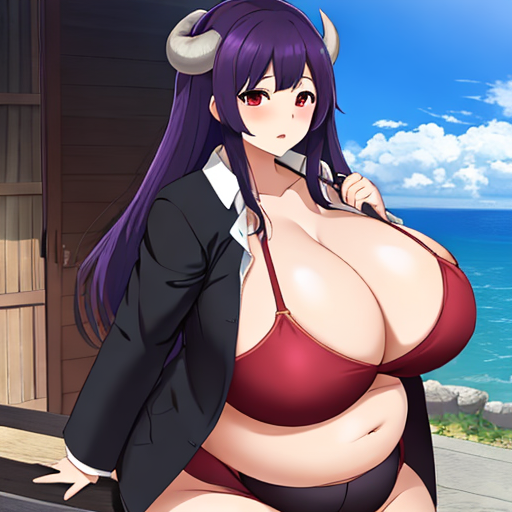
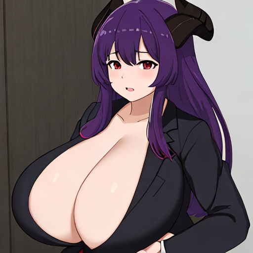
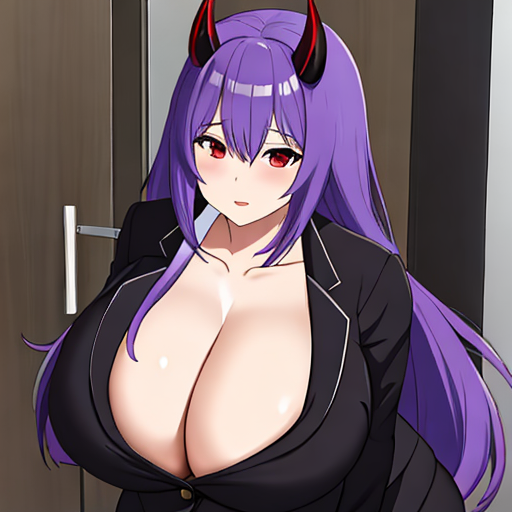
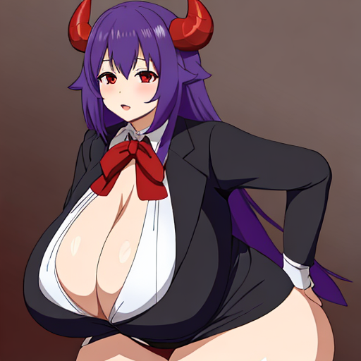
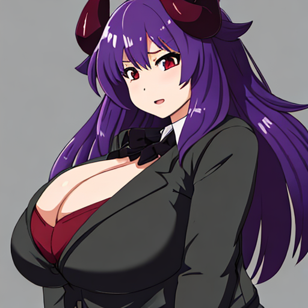
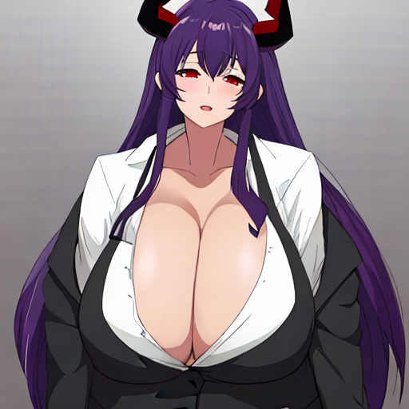
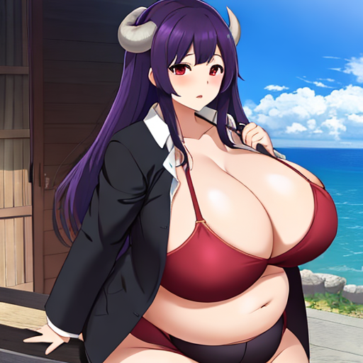
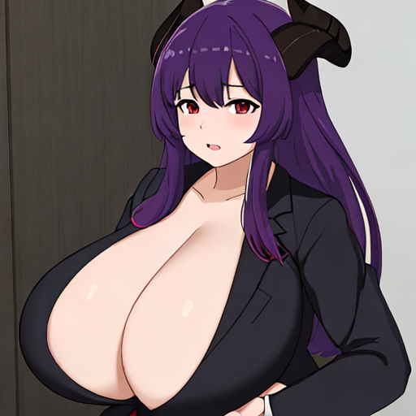
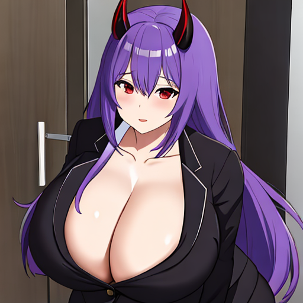
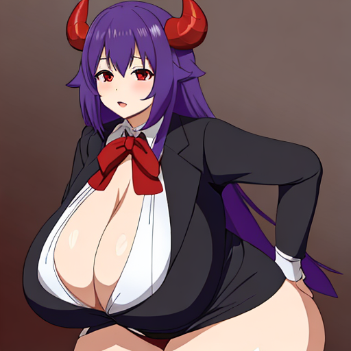


Q&A
Q: Why is she fat?
A: Personally I think fat is cute!
Q: How did you come up with the design?
A: Goth + non-human + traditionally proper attire turned risqué is both minimally creative and maximally attractive.
Q: Don't you find objectifying women through erotic caricatures like this to be uncomely?
A: Not really!